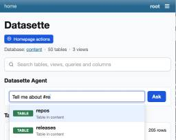
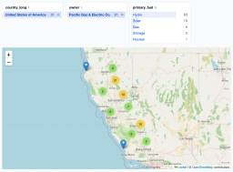

Simon Willison's Weblog
フィード

Quoting Ravi Vakil
Simon Willison's Weblog
<blockquote cite="https://math216.wordpress.com/2026/11/20/hurried-announcement-alessandro-masullo-grh/"><p>Alessandro Masullo has a proposed proof of [Generalized Riemann Hypothesis], and Brian Conrad has been looking closely at it for months and gave extensive feedback which is being incorporated, and it is so far looking good. It is all human, with no AI. The hope was to bring Alessandro to Stanford for a year to polish the writing and then announce it after running it by enough people. Now it seems best to put out the current draft.</p></blockquote><p class="cite">— <a href="https://math216.wordpress.com/2026/11/20/hurried-announcement-alessandro-masullo-grh/">Ravi Vakil</a>, Hurried Announcement: Alessandro Masullo GRH</p> <p>Tags: <a href="https://simonwillison.net/tags/mathematics">mathematics</a></p>
13時間前
Quoting Levent Alpöge
Simon Willison's Weblog
<blockquote cite="https://alpo.ge/remark.pdf"><p>I believe I have, working with Claude, discovered a proof of the Riemann Hypothesis. In fact, the method easily extends much further, resolving the so-called Generalized Riemann Hypothesis, and I expect, with more time, the Extended Riemann Hypothesis too. Claude and I have also formalized the arguments without assumptions. It is natural to feel that this is an end, in my case a loss of a principal guiding light, but what I saw during the course of progress so amazed me that I believe it is one dawn across science of something far greater. [...]</p><p>Claude and I have had a great time together with such breadth in recent months, but this time Claude far outpaced me near the finish line. No, Claude flew, and danced, and sparkled near that finish line.</p></blockquote><p class="cite">— <a href="https://alpo.ge/remark.pdf">Levent Alpöge</a>, alpo.ge/remark.pdf</p> <p>Tags: <a href="https://simonwillison.net/tags/anthropic">anthropic
15時間前
Token fraud is here and it’s BAD (YouTube)
Simon Willison's Weblog
<p><strong><a href="https://www.youtube.com/watch?v=ZDpP7JXPlhc">Token fraud is here and it’s BAD (YouTube)</a></strong></p>Claire Vo runs <a href="https://www.chatprd.ai">ChatPRD</a>, an AI platform that helps product managers "turn an idea into a spec". The product has been live since the GPT-4 era, and Claire has been building it in public for much of that time.</p><p>In this YouTube video (see also the <a href="https://x.com/clairevo/status/2119985786045227197">accompanying Twitter post</a>) Claire describes the <em>flood</em> of token fraud she has seen from groups abusing the product's free trial, sometimes just to get free AI usage but often to resell tokens or run other commercial enterprises on top of the ChatPRD agent.</p><blockquote><p>I am funding a international Roblox and Fortnite map studio. They run a loop of free trials and promo codes and then tunnel to my agent and use it to build Roblox and Fortnite maps.</p></blockquote><p>Apparently one of the common prompts Clai
1日前
PostgreSQL 19 Released
Simon Willison's Weblog
<p><strong><a href="https://www.postgresql.org/about/news/postgresql-19-released-3449/">PostgreSQL 19 Released</a></strong></p>Most years PostgreSQL ships a new release in September, but this year's release came two months later <a href="https://rhaas.blogspot.com/2026/10/postgres-19-is-late-and-its-ais-fault.html">thanks mainly</a> to the flurry of issues that the PostgreSQL team needed to address as part of the ongoing AI-reported vulnerability apocalypse.</p><p>This release was definitely worth the wait. My favorite new feature is this one:</p><blockquote><p>For applications that send reads to standbys, PostgreSQL 19 adds "read-your-writes" consistency with the new <a href="https://www.postgresql.org/docs/19/sql-wait.html"><code>WAIT FOR LSN</code></a> command. A session on a standby can use <code>WAIT FOR LSN</code> to wait until the standby has replayed the write-ahead log (WAL) up to a specific <a href="https://www.postgresql.org/docs/19/wal-internals.html">log sequence number (
1日前

llm-gemini 0.38
Simon Willison's Weblog
<p><strong>Release:</strong> <a href="https://github.com/simonw/llm-gemini/releases/tag/0.38">llm-gemini 0.38</a></p> <p>Today Google <a href="https://blog.google/innovation-and-ai/models-and-research/gemini-models/introducing-gemini-4-neon/">introduced Gemini 4 Neon</a>. I <a href="https://simonwillison.net/2026/Nov/12/llm-gemini/">wrote recently</a> about how confusing the pricing for the Gemini 4 series was - Neon has somehow made this even worse.</p><p>Previously the Gemini 4 lineup was Hydrogen, Argon, and Carbon - where Argon and Carbon were <em>the same price</em>, and Hydrogen was 3/4 of that price now but will be 1/4 of that price when the other two double an 1st December once their initial discount pricing expires.</p><p>The Neon announcement pretends that Argon doesn't exist. Here's their new image explaining the model line-up:</p><p><img alt="Comparison table slide titled "Gemini 4 - Our next era of frontier intelligence" with three model columns, Carbon, Neon an
2日前

datasette-arrows 0.1a0
Simon Willison's Weblog
<p><strong>Release:</strong> <a href="https://github.com/datasette/datasette-arrows/releases/tag/0.1a0">datasette-arrows 0.1a0</a></p> <p><a href="https://docs.datasette.io/en/latest/changelog.html#a43-2026-11-15">Datasette 1.0a43</a> added the ability for plugins to implement streaming export formats. Datasette core supports streaming CSV and TSV - you can export millions of lines of data from a table without needing to load it all into memory, because those two file formats support streaming data in chunks. The <a href="https://docs.datasette.io/en/latest/plugin_hooks.html#register-output-renderer-datasette">register_output_renderer()</a> plugin hook can now be used to implement the same pattern for other formats.</p><p>I've learned never to release a new plugin feature without accompanying it with a plugin that uses it.</p><p>Claude Fable 5.2 suggested the <a href="https://arrow.apache.org/docs/python/ipc.html">Apache Arrow streaming</a> format as a good option, and built this plug
3日前
Quoting Daniel Stenberg
Simon Willison's Weblog
<blockquote cite="https://daniel.haxx.se/blog/2026/11/17/actual-curl-rewrites-in-rust/"><p>During the time these agents converted 185,000 lines of C code into 340,000 lines of Rust code (I counted), we merged over 300 commits in the actual curl project. We actually improved curl during these a little more than three weeks. A little over 200 bugfixes actually. 200 bugfixes that none of those rust rewrites have. We also fixed a few vulnerabilities. In another month we have done another 200 and maybe fixed a few more vulnerabilities. Will these clones keep up?</p></blockquote><p class="cite">— <a href="https://daniel.haxx.se/blog/2026/11/17/actual-curl-rewrites-in-rust/">Daniel Stenberg</a>, Actual curl rewrites in Rust</p> <p>Tags: <a href="https://simonwillison.net/tags/daniel-stenberg">daniel-stenberg</a>, <a href="https://simonwillison.net/tags/curl">curl</a>, <a href="https://simonwillison.net/tags/rust">rust</a>, <a href="https://simonwillison.net/tags/security">security</a>,
3日前
The PSF end-of-year fundraiser
Simon Willison's Weblog
<p><strong><a href="https://donate.python.org">The PSF end-of-year fundraiser</a></strong></p>With my Python Software Foundation board director hat on: we've launched our end-of-year fundraiser for the non-profit that supports Python development and the Python community.</p><p>If your company or your work benefits from Python, please consider donating this year!</p><p>The PSF looks after the IP behind Python, operates PyPI, sponsors core developer sprints, supports community events (including running PyCon US every year), and employs a small and excellent staff team to keep everything running.</p><p>We also operate the <a href="https://www.python.org/psf/developersinresidence/">Developers in Residence program</a>, which now includes three security developers (welcome, Brett Smith) focused on helping secure Python, PyPI, and the wider ecosystem. <p>Tags: <a href="https://simonwillison.net/tags/python">python</a>, <a href="https://simonwillison.net/tags/psf">psf</a></p>
3日前

External sandboxes for coding agents
 1
1
Simon Willison's Weblog
<p><strong><a href="https://blog.primeradiant.com/external-sandboxes-for-coding-agents/">External sandboxes for coding agents</a></strong></p>I've been exploring new ways to sandbox code that is executed by agents, with a focus on making it safer to try out local models without worrying that a mistake or prompt injection attack might cause them to take damaging actions on a machine.</p><p>I worked on this project with <a href="https://primeradiant.com">Prime Radiant</a>, the AI research lab behind Superpowers and <a href="https://github.com/orgs/prime-radiant-inc/repositories">other projects</a>.</p><p><a href="https://blog.primeradiant.com/external-sandboxes-for-coding-agents/">My post</a> on the Prime Radiant blog introduces the <strong>external sandbox</strong> pattern, where code executed by the agent runs inside a dedicated sandbox while the agent itself lives outside of that sandbox.</p><p>To demonstrate this pattern we've released three sandbox server implementations:</p><ul><l
3日前

GPT‑6.2 Astra and GPT‑6.2 Sol
Simon Willison's Weblog
<p><strong><a href="https://openai.com/index/introducing-gpt-6-2-astra-sol/">GPT‑6.2 Astra and GPT‑6.2 Sol</a></strong></p>OpenAI:</p><blockquote><p>We’re introducing GPT‑6.2 Astra, our new frontier model for your hardest projects, and GPT‑6.2 Sol, our efficient, versatile model for everyday work.</p></blockquote><p>They're available in the API as <code>gpt-6.2-astra</code> and <code>gpt-6.2-sol</code>. I shipped <a href="https://llm.datasette.io/en/stable/changelog.html#v0-38">LLM 0.38</a> with support for the new models.</p><p>6.2 Astra is 80% of the price of 6 Astra - $8/MTok input and $40/MTok output, the same price as Claude Fable 5.2 (which was also 80% of its predecessor). 6 Astra and Fable 5 were both $10/$50. The cached price is an even bigger discount - $0.40/million compared to $1/million for the older model. This is great news for longer running agentic sessions.</p><p>GPT-6.2 Sol is the same $2/$10 price as 6.1 Sol and 6 Sol - which are half the price of GPT-5.6 Sol ($4/$
3日前

Running the full server-side Datasette Python app in the browser with service workers and Pyodide
Simon Willison's Weblog
<p><a href="https://lite.datasette.io/">Datasette Lite</a> is my port of the <a href="https://datasette.io/">Datasette</a> Python application to run directly in the browser using WebAssembly and <a href="https://pyodide.org/">Pyodide</a>. I've released a complete rewrite of Datasette Lite using service workers, and it's now almost indistinguishable from the real server-side application.</p><p>You can now do all of the following, using a carefully crafted URL to <strong>lite.datasette.io</strong>:</p><ul><li>Load client-side Datasette to browse any SQLite database, JSON file, CSV file or SQL script</li><li>Select a released version of Datasette to load from PyPI</li><li>Load a specific commit, tag, or branch name from the Datasette GitHub repository</li><li>Pick from over 100 versions of SQLite to use with Datasette</li><li>Install additional Datasette plugins from PyPI or URLs to wheel files, including JavaScript visualization tools</li></ul><p>The ability to load specific Datasette r
4日前
Quoting Go Proverbs
Simon Willison's Weblog
<blockquote cite="https://go-proverbs.github.io"><p>A little copying is better than a little dependency.</p></blockquote><p class="cite">— <a href="https://go-proverbs.github.io">Go Proverbs</a>, <a href="https://news.ycombinator.com/item?id=50516689#50526408">via</a></p> <p>Tags: <a href="https://simonwillison.net/tags/go">go</a>, <a href="https://simonwillison.net/tags/programming">programming</a></p>
4日前
llm 0.37.3
Simon Willison's Weblog
<p><strong>Release:</strong> <a href="https://github.com/simonw/llm/releases/tag/0.37.3">llm 0.37.3</a></p> <p>A bug fix release for <a href="https://llm.datasette.io">LLM</a>, mainly to cover a problem with the most recent Homebrew package of the software.</p><p>Homebrew now ships the latest SQLite, <a href="https://www.sqlite.org/releaselog/3_54_1.html">3.54.1</a>, which includes <a href="https://sqlite.org/bugs/info/2026-10-12T13:52:22Z">a fix</a> that <a href="https://github.com/simonw/llm/issues/1879">broke LLM's logging code</a>.</p><p>Short version: in SQLite 3.54.0 the following SQL:</p><pre><code>select json_object('a', (select json_array(1)))</code></pre><p>Returns this:</p><pre><code>{"a":[1]}</code></pre><p>But in 3.54.1 the same query returns this:</p><pre><code>{"a":"[1]"}</code></pre><p>According <a href="https://sqlite.org/forum/forumpost/dff1a343157e422f">to D. Richard Hipp</a>:</p><blockquote><p>That was a bug fix. Per the documentation, (SELECT json_array(...)) retu
4日前

datasette-maplibre 0.1a0
Simon Willison's Weblog
<p><strong>Release:</strong> <a href="https://github.com/datasette/datasette-maplibre/releases/tag/0.1a0">datasette-maplibre 0.1a0</a></p> <p>The first new Datasette geospatial plugin in quite a while! This one combines the excellent <a href="https://maplibre.org/maplibre-gl-js/docs/">MapLibre GL</a> library with <a href="https://openfreemap.org">OpenFreeMap</a>, the free vector map server operated by Zsolt Ero (you should <a href="https://github.com/sponsors/hyperknot">sponsor Zsolt on GitHub</a>.)</p><p>I built most of this with a single prompt to Claude Fable 5.2:</p><blockquote><p><code>Look at datasette-cluster-map and datasette-leaflet-geojson plugins, then look at ~/dev/tools/openfreemap-demo.html - then build a brand new Datasette plugin that uses maplibreGL and openfreemap and combines the features of those other two plugins - but be creative and think outside the box for other useful features the plugin might have</code></p></blockquote><p>"Be creative and think outside the
5日前
datasette 1.0a43
Simon Willison's Weblog
<p><strong>Release:</strong> <a href="https://github.com/simonw/datasette/releases/tag/1.0a43">datasette 1.0a43</a></p> <p>I've been leaning hard into Claude Fable 5.2 to help knock things off the <a href="https://github.com/simonw/datasette/milestone/37">1.0 milestone</a>, which is now 53% complete.</p><p>The biggest 1.0 item in this release is <a href="https://docs.datasette.io/en/latest/plugin_hooks.html#plugin-register-output-renderer-streaming">streaming support for output renderers</a> - the built-in TSV and CSV export mechanisms now use this as well, and plugins can register themselves as capable of streaming every row in a table in one go via the new <a href="https://docs.datasette.io/en/latest/internals.html#internals-response-stream">Response.stream()</a> method.</p><p>There are a couple of security fixes, one of which I deemed <a href="https://github.com/simonw/datasette/security/advisories/GHSA-mw6v-83vp-7c4c">deserving of a GitHub advisory</a>: private stored queries coul
5日前
datasette 0.65.6
Simon Willison's Weblog
<p><strong>Release:</strong> <a href="https://github.com/simonw/datasette/releases/tag/0.65.6">datasette 0.65.6</a></p> <p>I backported a minor security fix from 1.0a43:</p><blockquote><p>Fixed a security issue where a database registered using <code>add_database(db, name=..., route=...)</code> with a route that differs from its name could be downloaded from <code>/<route>.db</code> by actors who were denied access to it. [...]</p></blockquote> <p>Tags: <a href="https://simonwillison.net/tags/security">security</a>, <a href="https://simonwillison.net/tags/datasette">datasette</a></p>
5日前
datasette-apps 0.4a0
Simon Willison's Weblog
<p><strong>Release:</strong> <a href="https://github.com/datasette/datasette-apps/releases/tag/0.4a0">datasette-apps 0.4a0</a></p> <p>Datasette Apps are sandboxed HTML and JavaScript applications that live inside Datasette - think Claude Artifacts, but these ones can run SQL queries against your data.</p><p>0.4a0 adds support for linking: you can link to an app with <code>#fragments</code> in the URL and the app can see and use those, plus supported URL schemes are reported back to Datasette Agent so it can help write apps that link to each other.</p><p>This means you can have e.g. an app that shows details about a specific record, and a completely separate app that searches those records and links to their representations in the first app.</p> <p>Tags: <a href="https://simonwillison.net/tags/datasette-agent">datasette-agent</a>, <a href="https://simonwillison.net/tags/datasette-apps">datasette-apps</a>, <a href="https://simonwillison.net/tags/datasette">datasette</a>, <a href="https:
6日前

datasette-agent 0.6a0
Simon Willison's Weblog
<p><strong>Release:</strong> <a href="https://github.com/datasette/datasette-agent/releases/tag/0.6a0">datasette-agent 0.6a0</a></p> <p>Accumulated small fixes for Datasette Agent, my agent plugin for Datasette that lets you ask questions about your data. Most notably, it now adds an agent prompt directly to the Datasette homepage, with support for hash-mentions of tables and queries:</p><p><img alt="Datasette homepage. Below the search box is a Datasette Agent heading with a text input and an ask button. User has typed: Tell me about #re - the box is showing autocomplete results for the repos and releases tables." src="https://static.simonwillison.net/static/cors-allow/2026/datasette-agent-homepage.webp" /></p> <p>Tags: <a href="https://simonwillison.net/tags/datasette-agent">datasette-agent</a>, <a href="https://simonwillison.net/tags/llm">llm</a>, <a href="https://simonwillison.net/tags/datasette">datasette</a>, <a href="https://simonwillison.net/tags/llms">llms</a>, <a href="https
6日前

datasette-llm 0.1a11
Simon Willison's Weblog
<p><strong>Release:</strong> <a href="https://github.com/datasette/datasette-llm/releases/tag/0.1a11">datasette-llm 0.1a11</a></p> <p><code>datasette-llm</code> is the intermediate plugin for Datasette that supports configuring LLMs for use with other Datasette plugins.</p><p>This release adds support for OpenAI-compatible endpoints, so you can configure Datasette to use an LLM hosted anywhere that talks the OpenAI pseudo-standard web protocol.</p><p>This means that if you're running local models with <a href="https://lmstudio.ai">LM Studio</a> or <a href="https://ollama.com">Ollama</a> or <a href="https://github.com/ggml-org/llama.cpp">llama.cpp</a> (which just hit <a href="https://huggingface.co/blog/ggml-org/llama-cpp-v1">v1.0.0</a>) you can run Datasette via <code>uvx</code> like this:</p><div class="highlight highlight-source-shell"><pre>wget https://datasette.io/content.dbuvx --with datasette-agent datasette \ --root --secret 1 \ -s plugins.datasette-llm.default_model <span clas
6日前

datasette-vega 0.7
Simon Willison's Weblog
<p><strong>Release:</strong> <a href="https://github.com/simonw/datasette-vega/releases/tag/0.7">datasette-vega 0.7</a></p> <p>A new release of Datasette's longest untouched plugin, for rendering charts (using <a href="https://vega.github.io/vega-lite/">Vega-Lite</a>) against data in a table or custom query. The last release was in July 2018!</p><p>I finally bumped it for compatibility with the latest Datasette alphas, plus some cosmetic tweaks to make it work better with <a href="https://lite.datasette.io/">Datasette Lite</a>.</p><p>(Datasette Lite just gained the ability to run JavaScript plugins like this! I'll write more about that soon.)</p><p>Since it works with Datasette Lite, the live demo in the README now <a href="https://lite.datasette.io/?install=datasette-vega&csv=https%3A%2F%2Fraw.githubusercontent.com%2Ffivethirtyeight%2Fdata%2Fmaster%2Fairline-safety%2Fairline-safety.csv#/data/airline-safety?_size=max#g.mark=bar&g.x_column=airline&g.x_type=ordinal&g.y_c
7日前

datasette-cluster-map 0.19
Simon Willison's Weblog
<p><strong>Release:</strong> <a href="https://github.com/simonw/datasette-cluster-map/releases/tag/0.19">datasette-cluster-map 0.19</a></p> <p>One of the oldest Datasette plugins, and still one of my favorites. It now works with Datasette 1.0a42, and depends on <a href="https://simonwillison.net/2026/Nov/13/datasette-leaflet/">the new datasette-leaflet</a> to ensure OpenStreetMap tiles are requested with a referrer header.</p><p>Here's <a href="https://datasette.io/global-power-plants/global-power-plants?owner=Pacific+Gas+%26+Electric+Co.">a map of power plants owned by California's PG&E</a>, also demonstrating Datasette's recently <a href="https://github.com/simonw/datasette/pull/3032">redesigned facets</a>:</p><p><img alt="Screenshot of a faceted map interface. Three facet panels at the top: "country_long 1" with United States of America 81 selected; "owner 1" with Pacific Gas & Electric Co. 81 selected; "primary_fuel 5" listing Hydro 63, Solar
7日前
datasette-leaflet 0.3
Simon Willison's Weblog
<p><strong>Release:</strong> <a href="https://github.com/simonw/datasette-leaflet/releases/tag/0.3">datasette-leaflet 0.3</a></p> <p>OpenStreetMap have a very reasonable policy that hits to their hosted tile server <a href="https://wiki.openstreetmap.org/wiki/Referer">should send a referrer header</a>. Datasette table pages used the <code>Referrer-Policy: no-referrer</code> HTTP header, causing plugins that loaded tiles from OpenStreetMap to violate that policy.</p><p><code>datasette-leaflet</code> is the plugin that loads a bundled Leaflet so other Datasette plugins can depend on it. It now sets the referrer policy on the tile requests themselves to <code>strict-origin-when-cross-origin</code>, passing the host but not the full path to the page.</p> <p>Tags: <a href="https://simonwillison.net/tags/leaflet">leaflet</a>, <a href="https://simonwillison.net/tags/datasette">datasette</a>, <a href="https://simonwillison.net/tags/openstreetmap">openstreetmap</a></p>
7日前
llm-gemini 0.37
Simon Willison's Weblog
<p><strong>Release:</strong> <a href="https://github.com/simonw/llm-gemini/releases/tag/0.37">llm-gemini 0.37</a></p> <p>Google launched <a href="https://blog.google/innovation-and-ai/models-and-research/gemini-models/introducing-gemini-4-hydrogen/">Gemini 4 Hydrogen</a> today - the lowest cost member of the Gemini 4 family.</p><p>It's actually not too far off the price of its much bigger siblings, Carbon and Argon. I'm finding Gemini 4's pricing <em>really</em> confusing. Here's the pricing scheme:</p><center><table> <thead> <tr> <th>Model</th> <th>Dates</th> <th>Input ($/M)</th> <th>Cached input</th> <th>Output</th> </tr> </thead> <tbody> <tr> <td rowspan="2">Gemini 4 Carbon</td> <td>Through Nov 30, 2026</td> <td>$2.00</td> <td>$0.10</td> <td>$10.00</td> </tr> <tr> <td>From Dec 1, 2026</td> <td>$4.00</td> <td>$0.20</td> <td>$20.00</td> </tr> <tr> <td rowspan="2">Gemini 4 Argon</td> <td>Through Nov 30, 2026</td> <td>$2.00</td> <td>$0.10</td> <td>$10.00</td> </tr> <tr> <td>From Dec 1,
8日前
Gemini Decisions API
Simon Willison's Weblog
<p><strong><a href="https://blog.google/innovation-and-ai/technology/developers-tools/gemini-decisions-api/">Gemini Decisions API</a></strong></p>Google join <a href="https://simonwillison.net/2026/Sep/21/jev/">Jev</a> and <a href="https://simonwillison.net/2026/Oct/6/llm-openai-decisions/">OpenAI</a> in the decision model category with "Gemini Decision 1". This new model API is almost identical to Jev: it supports the same three types of questions (yes/no, choice, and rubric-scoring) and even reuses Jev's term "Noul" for a yes/no question.</p><p>It's priced the same as the GPT-6 Luna decision model: 10 cents per million input tokens, and output is free. Jev remains the cheapest of the three, at 4.2 cents per million.</p><p>Jev is text (and JSON) only. OpenAI can handle text and images. Gemini Decision 1 is fully multi-model: it covers text, images, audio, video, and PDFs.</p><p>I tested it against video by passing these questions to it along with my <a href="https://simonwillison.net
9日前
aws-emulator
Simon Willison's Weblog
<p><strong><a href="https://github.com/aws/aws-emulator">aws-emulator</a></strong></p>Finally, an official emulator from AWS to run tests against a local clone of their many different services without having to provision a paid API key to do so.</p><p>It's written in Rust by a huge swarm of agents - 29,684 commits in the first three weeks of the project. Swaminathan (Swami) Sivasubramanian wrote about <a href="https://www.allthingsdistributed.com/2026/11/aws-emulator-and-the-engineers-job-when-agents-write-the-code.html">how it came to be</a> in a guest post on Werner Vogels' blog.</p><p>It currently requires Docker to run on macOS or Windows. I'm hoping they fix that in the future - it would be great if you could download a single binary and use that as part of a standard test suite in other languages and on other platforms. <p>Tags: <a href="https://simonwillison.net/tags/amazon">amazon</a>, <a href="https://simonwillison.net/tags/amazon-web-services">amazon-web-services</a>, <a hre
9日前
Browse tools.simonwillison.net by tag
Simon Willison's Weblog
<p><strong><a href="https://tools.simonwillison.net/#tags">Browse tools.simonwillison.net by tag</a></strong></p>I've been wanting a better way to browse my <a href="">collection of vibe-coded tools</a> (244 and counting) for a while. I had a few Fable 5.2 credits left over before my weekly reset so I set it to work using <a href="https://github.com/tree-sitter/py-tree-sitter">tree-sitter</a> to analyze the code for JavaScript APIs, libraries, and web API hosts used by each tool.</p><p>The homepage now features tag clouds for browsing by each of those categories of tag:</p><p><a href="https://tools.simonwillison.net/#tags"><img alt="Screenshot of two tag cloud sections where tags are sized by count. Browse by JavaScript libraries - Libraries loaded from a CDN by two or more tools. Select a tag to list its tools. @google/generative-ai 3, @jsquash/avif 3, @jsquash/webp 4, Babel 2, Chart.js 2, Cropper.js 2, D3 2, DOMPurify 7, js-yaml 3, JSZip 3, Leaflet 4, markdown-it 4, Marked 12, pako
10日前
llm 0.37.2
Simon Willison's Weblog
<p><strong>Release:</strong> <a href="https://github.com/simonw/llm/releases/tag/0.37.2">llm 0.37.2</a></p> <p>Fixes a security issue reported by <a href="https://github.com/BluePlexus">Daniel de Araujo</a> in <a href="https://github.com/simonw/llm/security/advisories/GHSA-v9h7-jj4g-f862">GHSA-v9h7-jj4g-f862</a> and <a href="https://github.com/simonw/llm/security/advisories/GHSA-r639-rr7r-x72w">GHSA-r639-rr7r-x72w</a>.</p><p>LLM has a mechanism called <a href="https://llm.datasette.io/en/stable/other-models.html#configure-an-openai-compatible-model">extra-openai-models.yaml</a> - now managed by the new-in-0.37 <a href="https://llm.datasette.io/en/stable/other-models.html#openai-endpoint-add">llm openai endpoint add</a> command - for using LLM with OpenAI-compatible API endpoints from other providers.</p><p>Daniel reported two ways this could accidentally send your configured OpenAI API key to one of those providers: if the key named by <code>api_key_name</code> had never been stored,
10日前
Anthropic's IPO roadshow video
Simon Willison's Weblog
<p><strong><a href="https://ipo.anthropic.com/us/#roadshow-video">Anthropic's IPO roadshow video</a></strong></p>Anthropic kicked off their IPO roadshow yesterday, and their roadshow video has some previously unreleased information about how their business works.</p><p>The section on "Approach to compute" with co-founder Tom Brown is particularly interesting, describing how Anthropic train and serve Claude across AWS Trainium, Google TPUs, NVIDIA GPUs, and AMD GPUs.</p><p>I'm not sure why there's no official video transcript, but here's <a href="https://gist.github.com/simonw/9806757fe8acec6221cb0a5cce4d720d">one that I extracted</a> using MacWhisper. Highlights below:</p><blockquote><p>We train and serve Claude now across all four major chip families. That's only possible because early on we made an unconventional bet on a multi-chip strategy. At the time, many people thought that running AI models on different chips wasn't worth the effort. Each chip needs its own tailored soft
10日前
llm-gemini 0.36
Simon Willison's Weblog
<p><strong>Release:</strong> <a href="https://github.com/simonw/llm-gemini/releases/tag/0.36">llm-gemini 0.36</a></p> <p>Gemini 4 Carbon was announced <a href="https://blog.google/innovation-and-ai/models-and-research/gemini-models/introducing-gemini-4-carbon/">two weeks ago</a> for "a subset of cyber defenders", but today it's <a href="https://blog.google/innovation-and-ai/models-and-research/gemini-models/gemini-4-carbon-now-available/">available to everyone else</a>.</p><p>This is Google's best ever Gemini, priced at $2/million input and $10/million output at launch (that's GPT-6.1 Sol / Claude Sonnet 5.5 prices) but scheduled to double in price to $4/$20 on December 1st (same as Opus 5.5).</p><p>Here are <a href="https://tools.simonwillison.net/markdown-svg-renderer?url=https%3A%2F%2Fgist.github.com%2Fsimonw%2Fe5bf860633fc12e8f926f305c4c3190c">three pelicans</a> for the low, medium and high thinking efforts (it defaults to medium). This is the pelican I got for high:</p><p><img al
10日前
Introducing Our Smallest, Most Efficient Model: Muse Ember
Simon Willison's Weblog
<p><strong><a href="https://research.meta.ai/blog/muse-ember">Introducing Our Smallest, Most Efficient Model: Muse Ember</a></strong></p>Meta AI just launched their entry in the Claude Haiku/GPT Luna category: Muse Ember, which they describe as:</p><blockquote><p>[...] our smallest and most efficient model designed for complex reasoning execution and the work agents repeat all day: tool calls, coding subtasks, routing, extraction, and long document parsing.</p></blockquote><p>For shorter prompts it's priced the same as GPT-6 Luna and Claude Haiku 5.5 - both are $0.10/million input tokens and $0.50/million output. Today's other big model release, Claude Fable 5.2, is <em>80x that price</em> at $8/$40.</p><p>The pricing is a little less straightforward as prompts get longer, though. Luna, Ember, and Haiku all support up to a million input tokens, but they also all have a threshold after which the price goes up. Taking <em>that</em> threshold into account Ember is priced between the two
11日前